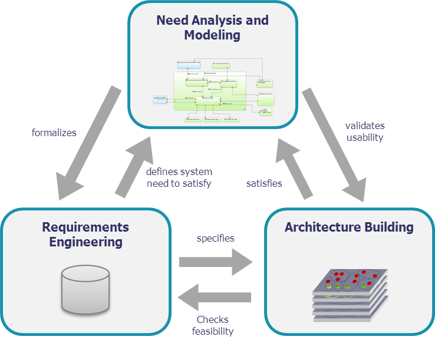
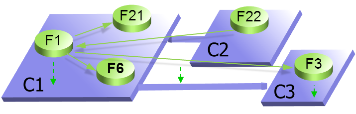
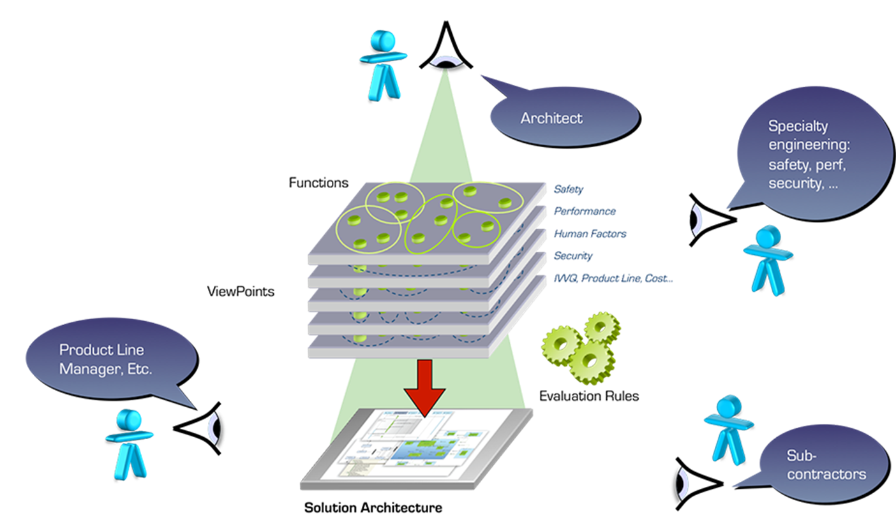
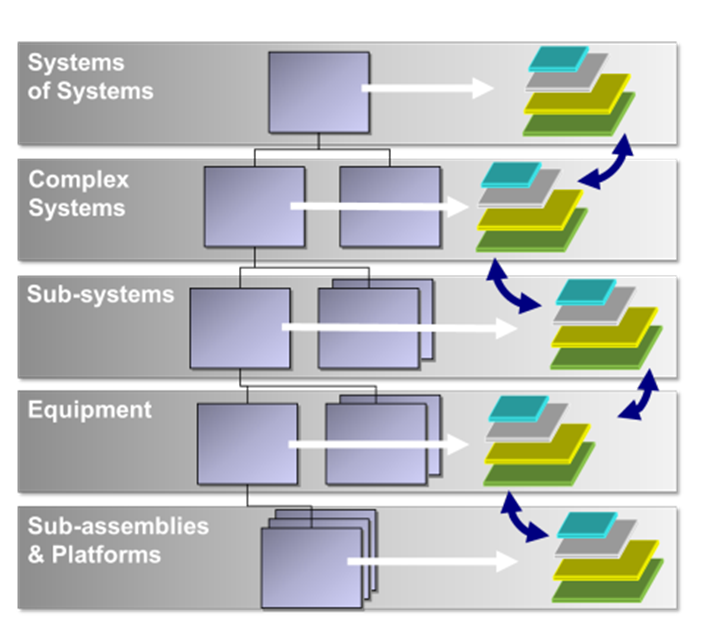

Modern systems are subjected to increasingly higher constraints regarding safety, security, performance, environment, human factors, etc. Each of these constraints are under the responsibility of different stakeholders which deeply influences the systems architectural design and development process. They are to be integrated and reconciled.
Architecture as prime engineering driver
Architecture is a powerful tool to analyse operational needs, to structure and to break down the system, software, or hardware function in order to:
- Provide significant information for decision-makers and managers
- Ease the mastering of need, complexity, design and development
- Structure engineering in a well-defined, justified, technical frame
- Guide designers and developers to respect the product definition drivers

Arcadia, a model-based engineering method
Arcadia is a model-based engineering method for systems, hardware and software architectural design. It has been developed by Thales between 2005 and 2010 through an iterative process involving operational architects from all the Thales business domains.
Arcadia promotes a viewpoint-driven approach (as described in ISO/IEC 42010) and emphasizes a clear distinction between need and solution.
{kind=link}
Steps and activities of the method have been defined with a few Golden Rules:
- Besides requirement engineering, drive an operational need analysis, describing final user expectations, usage conditions, and realistic IVVQ conditions
- Consider engineering through three mandatory interrelated
activities, at the same level of importance:
- Need analysis and modelling
- Architecture building and validation
- Requirements engineering
- Check requirements against an architectural design model (early architecture) for robustness and feasibility
- Structure the system/hardware/software and build a logical architecture, by searching for the best compromise between design drivers, (non-functional) constraints and viewpoints. Each viewpoint deals with a specific concern such as functional consistency, interfaces, performances, real time, safety, security, integration, reuse, cost, risk, schedule, and the ease of adaptation (e.g. to changing requirements)
- Secure development and IVVQ through a physical architecture which deals with technical and development issues, favouring separation of concerns, efficient and safe component interaction (e.g. layered architecture, generic behaviour and interaction patterns, component model, etc.)
{kind=link}
Noticeable features of Arcadia
- Models supporting enterprise-wide collaboration
and co-engineering
- A Capella model is built for each Arcadia engineering phase. All of these models are related by justification links and are processed as a whole for impact analysis.
- Collaboration with engineering specialities is supported by modelled engineering viewpoints to formalise constraints and to evaluate architecture adequacy with each of them
- Collaboration with customer and subsystems engineering relies on co-engineered models (e.g. physical architecture), automatic initialisation of need model for sub-systems, and impact analysis means between requirements and models of different engineering levels.
- Tailored for architectural design
- A domain-specific language (DSL) was preferred in order to ease appropriation by all stakeholders, usually not familiar with general-purpose, generic languages such as UML or SysML.
- Dealing with complexity and size
- Abstraction levels are in the DNA of Arcadia. Capella advanced mechanisms have been developed to mask and confine complexity, deal with model maintenance, large-scale modelling, model evolution and reuse.
- Field-proven in real industrial situations
- Arcadia is currently applied in most Thales business units, in many countries, on very large or small projects, by hundreds of users. A continuous challenging, improvement and adaptation of both the method and its supporting workbench has favoured a very fast dissemination.
- Open to domain-specific added value
- Adapted to several lifecycles and work sharing schemes
Definition of the Problem - Customer Operational Need Analysis
The first step focuses on analysing the customer needs and goals, expected missions and activities, far beyond system requirements. This analysis aims at ensuring adequate system definition with regard to its real operational use and IVVQ conditions.
Outputs of this engineering phase mainly consist of an “operational architecture” which describes and structures the need in terms of actors/users, their operational capabilities and activities (including operational use scenarios with dimensioning parameters, and operational constraints such as safety, security, lifecycle, etc.).
Formalization of system requirements - System Need Analysis
The second step focuses on the system itself, in order to define how it can satisfy the former operational need, along with its expected behaviour and qualities. The following elements are created during this step: Functions to be supported and related exchanges, non-functional constraints (safety, security, etc.), performance allocated to system boundary, role sharing and interactions between system and operators, etc.
The main goal at this stage is to check the feasibility of customer requirements (cost, schedule, technology readiness, etc.) and if necessary, to provide means to renegotiate their content. The functional need analysis can be completed by an initial system architectural design model in order to examine requirements against this architecture and evaluate their cost and consistency.
Outputs of this engineering phase mainly consist of system functional need descriptions (functions, functional chains, scenarios), interoperability and interaction with the users and external systems (functions, exchanges plus non-functional constraints), and system requirements.
Note that these two phases, which constitute the first part of architecture building, "specify" the subsequent design, and therefore should be approved/validated with the Customer.
Development of System Architectural Design - Logical Architecture (Notional Solution)
This third step aims at building a coarse-grained component breakdown of the system which is unlikely to be challenged later in the development process. Starting from previous functional and non-functional analysis refined results (functions, interfaces, data flows, behaviours…), build one or several decompositions of the system into logical components. These logical components will later tend to be the basic decomposition for development/sub-contracting, integration, reuse, product and configuration management item definitions (but other criteria will be taken into account to define the boundaries for these items)
{kind=link}
The building process has to take into account architectural drivers and priorities, viewpoints and associated design rules, etc. For te component breakdown to be stable in further engineering phases, all major (non-functional) constraints (safety, security, performance, IVV, cost, non-technical, Etc.) are taken into account and compared to each other so as to find the best trade-off. This method is described as "viewpoint-driven", where viewpoints formalise the way these constraints impact the system architecture.
Outputs of this engineering phase consist of the selected logical architecture which is described by components and justified interfaces definition, scenarios, modes and states, formalisation of all viewpoints and the way they are taken into account in the components design.
Since the architecture has to be validated against the need analysis, links with requirements and operational scenarios are also to be produced.
{kind=link}
Development of System Architecture - Physical Architecture
The fourth step has the same intent as the logical architecture building, except that it defines the “final” architecture of the system at this level of engineering. Once this is done the model is considered ready to develop (by "lower" engineering levels). Therefore, it introduces rationalisation, architectural patterns, new technical services and components, and makes the logical architecture evolve according to implementation, technical and technological constraints and choices. The same viewpoint-driven approach as for logical architecture building is used.
Outputs of this engineering phase consist of the selected physical architecture which includes components to be produced, formalisation of all viewpoints and the way they are taken into account in the components design. Links with requirements and operational scenarios are also produced.
Formalize Components Requirements - Contracts for Development and IVVQ
The fifth and last step is a contribution to an EPBS (End-Product Breakdown Structure), taking benefits from the former architectural work, to formalise the component requirements definition and prepare a secured IVVQ.
All previous hypotheses and imposed constraints associated to the system architecture and components are summarised and checked here.
Outputs from this engineering phase are mainly component integration contracts collecting all necessary expected properties for each component to be developed.
Co-Engineering, Sub-Contracting and Multi-Level Engineering
The physical architecture is the preferred place for co-engineering between systems, software, and hardware stakeholders.

Arcadia can be applied in a recursive way at each level of system breakdown, so that a subsystem of the current system of interest becomes the system at the next level of interest, until single discipline subsystems or procurement items or COTS are identified.
The physical architecture at a given level of interest defines the components to be developed at the level above, according to the corresponding component integration contract. Level "n" need analysis is restricted to each component scope, in order to define its IVVQ context.
{kind=link}
Adaptation of Arcadia to Dedicated Domains, Contexts, Etc.
Beyond the transverse, common architectural design work, each organization, in the field of its own business, constraints and know-how, should tailor the method steps by adapting them to their own domains, products and programs. This includes:
- Definition of a reference architecture (including architecture drivers) for each key product and software element
- Definition of appropriate viewpoints adapted to the domain, product and architecture
- Definition of complementary dedicated engineering rules
- Selection of relevant architectural patterns for the domain, product, and technologies considered
- Setting up of models, based on the reference architecture and viewpoints, and basis for simulation, early validation, automation of the design process (key for productivity gains)
- Definition of adjustment rules for each of its contexts
- Dissemination in the engineering teams (training, coaching)...
The recommended method described in this document takes best benefit from a top-down approach:
- Starting from operational need to define and validate requirements
- Building a "technology neutral" logical architecture dealing with non-functional constraints
- Then specifying technical functions and services of a physical architecture to implement it in the best way
Yet many constraints which need to be taken into account arise from the industrial context:
- Technical or technological limits
- Available technology, COTS
- Existing legacy to be reused
- Product policy imposing the use of given hardware boards, software components...
- Industrial constraints such as available skills, the necessity to sub-contract, and export control...
This is the reason why Arcadia can be applied according to several lifecycles and work sharing schemes. Great care has been taken in the method, language and the Capella workbench to not impose one single engineering path (e.g. top-down) but to be adaptable to many lifecycles: Incremental, iterative, top-down, bottom-up, middle-out, Etc.. The method is inherently iterative.
Examples of iterations or non-linear courses are:
- Need analysis starting from requirements, due to a lack of operational knowledge (a kind of reverse engineering of operational need)
- Requirements analysis anticipating logical or even physical architecture, to check for feasibility by defining/confronting to an early architecture
- Logical architecture anticipating (part of) physical architecture, e.g. to check for performance issues
- Physical architecture adapting to subcontracting constraints
- Components contract definition iterating on physical architecture to secure integration and refine contract parameters